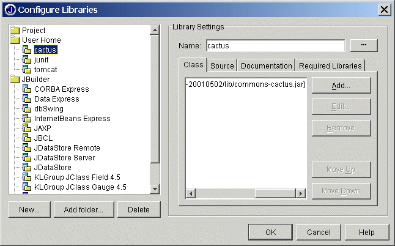

|
|
| Apache > Jakarta > Cactus > Running Tests | Docs for: v1.7.2 | v1.7 Last update: March 26 2006 |
Forewords and RequirementsFirst of all, you need to download the Cactus distribution Step 1: Create JBuilder libraries
Let's assume the following conventions:

Create the JUnit library
Create a JUnit library and include Create the Cactus library
Create a Cactus library containing
You can also add the source file directories in the source tab.
This way, you will be able to debug inside cactus sources.
Create the tomcat library
Create another library named
If you use JBuilder 4 Enterprise or JBuilder 4 Professionnal, you don't need to create
this library because Tomcat 3.1 is provided with those versions.
Step 2: Set up the cactus.properties file
Edit a new file named
Copy your Step 3: Configure Tomcat EnvironmentCreate a cactus webapp
Create and edit the file
<?xml version="1.0" encoding="ISO-8859-1"?>
<!DOCTYPE web-app
PUBLIC "-//Sun Microsystems, Inc.//DTD Web Application 2.2//EN"
"http://java.sun.com/j2ee/dtds/web-app_2_2.dtd">
<web-app>
<servlet>
<servlet-name>ServletRedirector</servlet-name>
<servlet-class>org.apache.cactus.server.ServletTestRedirector</servlet-class>
</servlet>
<servlet-mapping>
<servlet-name>ServletRedirector</servlet-name>
<url-pattern>/ServletRedirector</url-pattern>
</servlet-mapping>
</web-app>
You can edit
{Tomcat dir}/conf/web.xml instead if you
prefer. You can also edit the web.xml file of the webapp where is
located the servlet(s) you want to test. Don't forget to modify cactus.properties file accordingly.
Step 4: Configure your project
Step 5: Test and debug your servletTest your servlet
Debug your servlet and your testsYou can easily print the results of the methods on the server-side itself.
You can also start Tomcat in debug mode (
If you right click on the file containing your test case and click
on |